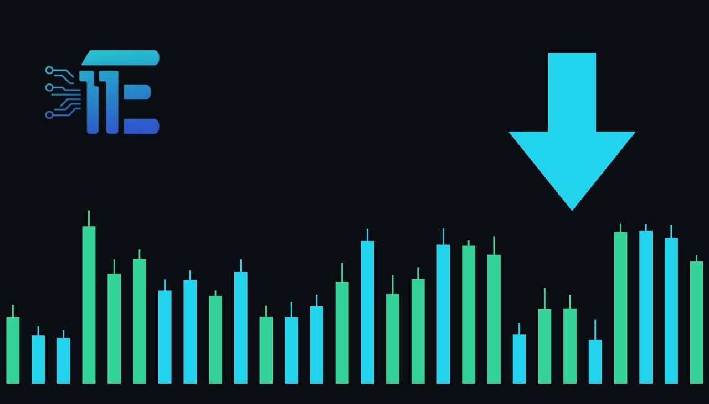

US Consumer Confidence Jumps to 103.3 as Inflation Worries Persistទំនុកចិត្តអ្នកប្រើប្រាស់អាមេរិកហក់ឡើងដល់ 103.3 ខណៈការព្រួយបារម្ភពីអតិផរណានៅតែបន្ត
XAU/USD impact: ▼ Bearishផលប៉ះពាល់លើ XAU/USD: ▼ ធ្លាក់

The Conference Board survey showed broad improvement with US consumer confidence rising to 103.3 following midterm election results. Firmer economic sentiment combined with lingering inflation concerns can reinforce higher interest rates and pressure gold.
ការស្ទង់មតិរបស់ The Conference Board បានបង្ហាញពីភាពល្អប្រសើរឡើងលើគ្រប់ផ្នែក ដោយទំនុកចិត្តអ្នកប្រើប្រាស់អាមេរិកបានកើនឡើងដល់ 103.3 បន្ទាប់ពីការបោះឆ្នោតពាក់កណ្តាលអាណត្តិ។ ស្ថានភាពនេះអាចជំរុញឱ្យអត្រាការប្រាក់នៅកម្រិតខ្ពស់ និងដាក់សម្ពាធលើហាងឆេងមាស។
United States consumer confidence increased notably following recent midterm election victories, according to data released on Tuesday by The Conference Board. The organization's survey revealed widespread improvement across its components, lifting the headline consumer confidence index to 103.3. However, even with the headline gauge shooting higher, respondents continued to express persistent worries surrounding inflation.
ទំនុកចិត្តរបស់អ្នកប្រើប្រាស់នៅសហរដ្ឋអាមេរិកបានកើនឡើងគួរឱ្យកត់សម្គាល់ បន្ទាប់ពីជ័យជម្នះក្នុងការបោះឆ្នោតពាក់កណ្តាលអាណត្តិ នេះបើយោងតាមទិន្នន័យដែលចេញផ្សាយកាលពីថ្ងៃអង្គារដោយ The Conference Board។ ការស្ទង់មតិរបស់ស្ថាប័ននេះបានបង្ហាញពីភាពល្អប្រសើរឡើងលើគ្រប់ផ្នែក ដែលបានរុញច្រានសន្ទស្សន៍ទំនុកចិត្តអ្នកប្រើប្រាស់ឱ្យហក់ឡើងដល់កម្រិត 103.3។ ទោះជាយ៉ាងណាក៏ដោយ បើទោះបីជាសន្ទស្សន៍រួមបានកើនឡើងខ្លាំងក៏ដោយ ក៏ការព្រួយបារម្ភអំពីបញ្ហាអតិផរណានៅតែបន្តកើតមានក្នុងចំណោមអ្នកឆ្លើយតប។
For participants in the gold market, consumer confidence metrics provide valuable insight into household sentiment and underlying economic momentum. Stronger confidence often points to resilient consumer demand, which can keep economic activity firm. When accompanied by enduring inflation concerns, such resilience may encourage the Federal Reserve to keep interest rates elevated for a longer duration, boosting the US dollar and Treasury yields at the expense of non-yielding bullion.
សម្រាប់អ្នកចូលរួមក្នុងទីផ្សារមាស សូចនាករនៃទំនុកចិត្តអ្នកប្រើប្រាស់បានផ្តល់នូវការយល់ដឹងយ៉ាងសំខាន់អំពីអារម្មណ៍របស់គ្រួសារ និងសន្ទុះសេដ្ឋកិច្ចជាក់ស្តែង។ ទំនុកចិត្តដែលកាន់តែរឹងមាំតែងតែឆ្លុះបញ្ចាំងពីតម្រូវការប្រើប្រាស់ដ៏រឹងមាំ ដែលអាចរក្សាសកម្មភាពសេដ្ឋកិច្ចឱ្យមានស្ថិរភាព។ នៅពេលដែលវាដើរទន្ទឹមគ្នាជាមួយនឹងការព្រួយបារម្ភពីអតិផរណាដែលនៅតែបន្ត ភាពធន់នេះអាចជំរុញឱ្យ Fed រក្សាអត្រាការប្រាក់នៅកម្រិតខ្ពស់ក្នុងរយៈពេលយូរ ដែលអាចគាំទ្រដល់ប្រាក់ដុល្លារអាមេរិក និងធ្វើឱ្យប៉ះពាល់ដល់ការទាក់ទាញនៃលោហៈធាតុដែលមិនផ្តល់ការប្រាក់ដូចជាមាស។
The transmission channel to XAU/USD operates largely through borrowing costs and currency valuations. When economic confidence strengthens and inflation anxieties linger, markets may anticipate tighter financial conditions or a delay in monetary easing. A firmer US dollar and the prospect of elevated interest rates typically increase the opportunity cost of holding non-interest-bearing gold, creating downward price pressure.
យន្តការជះឥទ្ធិពលមកលើ XAU/USD គឺកើតឡើងតាមរយៈថ្លៃដើមនៃការខ្ចីប្រាក់ និងតម្លៃរូបិយប័ណ្ណ។ នៅពេលដែលទំនុកចិត្តសេដ្ឋកិច្ចរឹងមាំ ហើយក្តីបារម្ភលើអតិផរណានៅតែមាន ទីផ្សារអាចរំពឹងថានឹងមានលក្ខខណ្ឌហិរញ្ញវត្ថុតឹងរ៉ឹង ឬការពន្យារពេលក្នុងការបន្ធូរបន្ថយរូបិយវត្ថុ។ ភាពរឹងមាំនៃដុល្លារអាមេរិក និងលទ្ធភាពនៃអត្រាការប្រាក់ខ្ពស់ ជាទូទៅបង្កើនថ្លៃដើមឱកាសនៃការកាន់កាប់មាស ដែលនាំឱ្យមានសម្ពាធធ្លាក់ចុះលើតម្លៃមាស។
Moving forward, gold traders will watch whether sustained improvements in consumer mood translate into persistent household expenditures or feed further into price pressures. Signs that resilient confidence is keeping inflation elevated could keep the US dollar supported, while any future softening in consumer expectations or renewed economic headwinds could offer renewed backing for safe-haven precious metals.
សម្រាប់ជំហានបន្ទាប់ អ្នកជួញដូរមាសនឹងតាមដានថាតើភាពប្រសើរឡើងនៃទំនុកចិត្តអ្នកប្រើប្រាស់ នឹងបន្តជំរុញការចំណាយរបស់គ្រួសារ ឬបង្កើនសម្ពាធថ្លៃទំនិញបន្ថែមទៀតឬយ៉ាងណា។ សញ្ញាណាមួយដែលបង្ហាញថាទំនុកចិត្តដ៏រឹងមាំនេះកំពុងរក្សាអតិផរណាឱ្យនៅកម្រិតខ្ពស់ អាចជួយគាំទ្រដល់ប្រាក់ដុល្លារអាមេរិក ខណៈដែលការចុះខ្សោយនៃទំនុកចិត្តអ្នកប្រើប្រាស់នាពេលអនាគត អាចផ្តល់ការគាំទ្រជាថ្មីដល់លោហៈធាតុមានតម្លៃដែលជាទ្រព្យសុវត្ថិភាព។
Key takeawaysចំណុចសំខាន់ៗ
- The Conference Board reported that the US consumer confidence index jumped to 103.3 on Tuesday.
- ស្ថាប័ន The Conference Board បានរាយការណ៍ថាសន្ទស្សន៍ទំនុកចិត្តអ្នកប្រើប្រាស់អាមេរិកបានហក់ឡើងដល់ 103.3 កាលពីថ្ងៃអង្គារ។
- Survey results indicated broad-based gains following midterm election outcomes, though inflation worries persist.
- លទ្ធផលស្ទង់មតិបានបង្ហាញពីភាពប្រសើរឡើងលើគ្រប់ផ្នែកបន្ទាប់ពីលទ្ធផលបោះឆ្នោតពាក់កណ្តាលអាណត្តិ ទោះបីជាការព្រួយបារម្ភពីអតិផរណានៅតែបន្តក៏ដោយ។
- Resilient consumer sentiment and ongoing inflation concerns can reinforce higher interest rates, presenting headwinds for XAU/USD.
- អារម្មណ៍រឹងមាំរបស់អ្នកប្រើប្រាស់ និងក្តីបារម្ភអតិផរណាអាចជួយគាំទ្រអត្រាការប្រាក់ខ្ពស់ ដែលជាឧបសគ្គសម្រាប់គូជួញដូរ XAU/USD។
Original commentary by THE MARKET CODE, based on public reporting from Economy. Written with the help of AI. Educational only, not financial advice.
មតិវិភាគដើមដោយ THE MARKET CODE ផ្អែកលើការរាយការណ៍សាធារណៈពី Economy។ សរសេរដោយមានជំនួយពី AI។ មាតិកាអប់រំប៉ុណ្ណោះ មិនមែនជាដំបូន្មានហិរញ្ញវត្ថុទេ។